Modifying an Individual File#
Creating a Likert Scale Block#
Instruction
Using 2a. DASSY_likert_block.js as an example, the first few lines in the file create an instruction page displayed to participants:
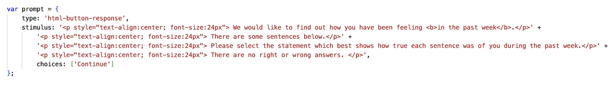
What participants see:
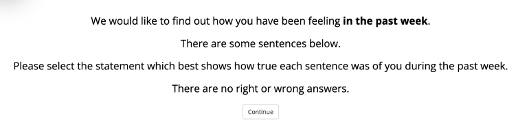
To create your own questionnaire block, modify the instruction text here:
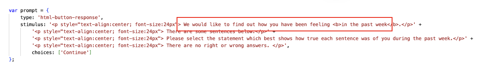
To adjust font, size, text alignment, and other styling:
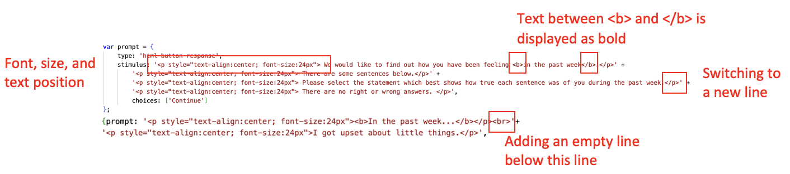
Questions & Responses
The response choices and questions are defined here:
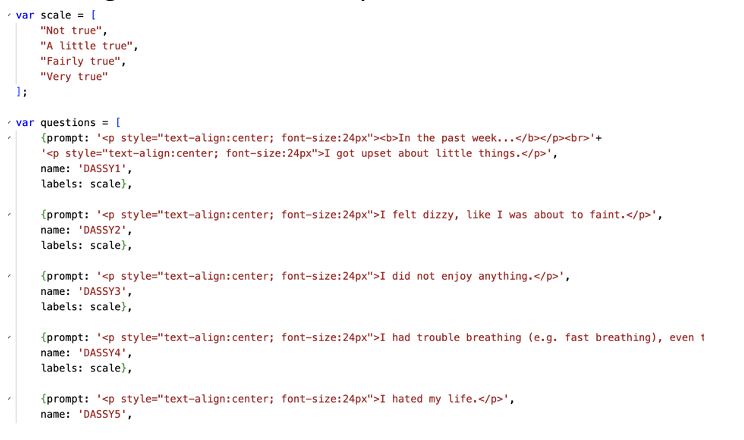
What participants see:
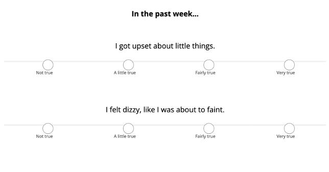
Since all questions in this questionnaire share the same response options, they only need to be defined once in a chunk called scale (you can use any name, but keep it consistent throughout the file), and then referenced for each individual question:
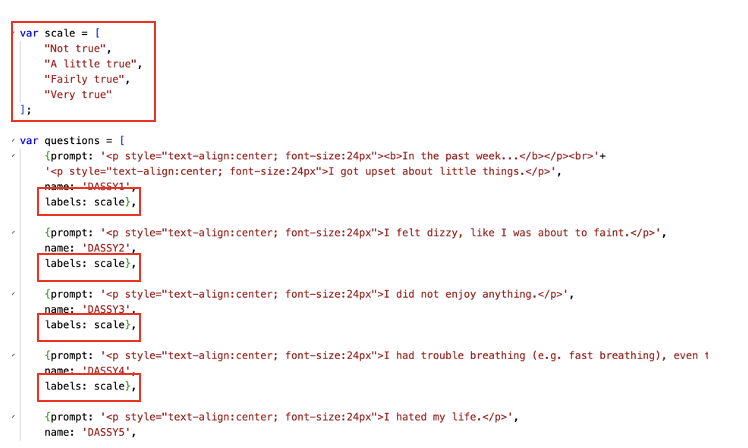
If response options differ across questions, define them separately within the var questions chunk (see “16b. SSPDG_likert_block.js” for an example):
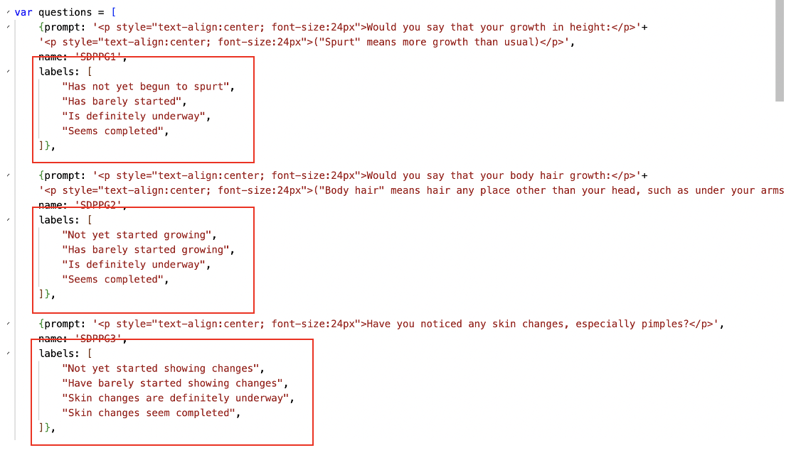
Additional Settings
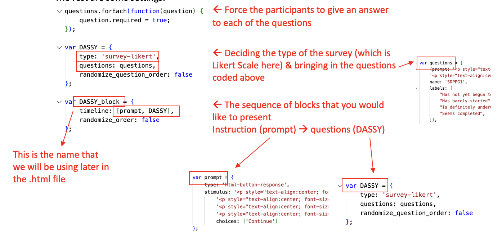
Other Types of Surveys & Functions#
Here are some examples beyond the Likert scale:
Text Response
Example: 1. demographics_block.js
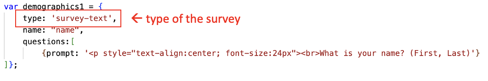
What participants see:
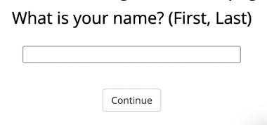
Presenting an Image
Example: 0. consent_block.js
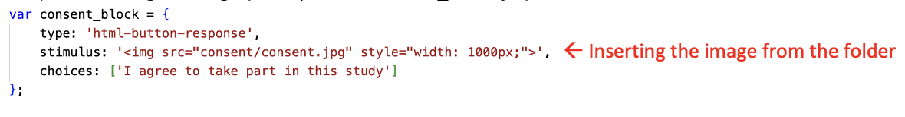
Other JSPsych Functions
For other JSPsych functions, including slider, multi-select, and audio/video, are documented on the JSPsych Website.
Important
The survey-html-form plugin allows you to mix different question types on the same page.